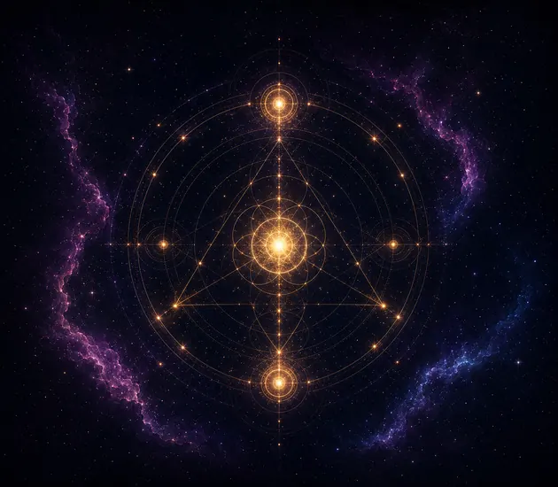

तारों का नक्शा: इस समय आपके शहर के ऊपर का असली आकाश — जन्म का आकाश ऐप में
फ़ोन को आकाश की ओर उठाइए और देखिए कि आपके ऊपर क्या है: तारे, तारामंडल, चंद्रमा और ग्रह, किसी भी जगह और किसी भी समय के लिए। My Cosmic Code असली खगोलीय गणना से आकाश आपके फ़ोन पर ही बनाता है, और मेरा कॉस्मिक आकाश में आपके जन्म के ग्रह भी तारों के बीच दिखाता है।
आकाश का नक्शा: इस समय आपके ऊपर का आकाश
एक शहर चुनें और इस पल उसके ऊपर का असली आकाश देखें: तारे, तारामंडलों की आकृतियाँ और नाम, चंद्रमा और ग्रह, क्षितिज और चारों दिशाओं के साथ।
क्या आप सूचना चाहते हैं जब कोई ग्रह आपकी राशि में आए या उससे जाए, वक्री हो, या आपकी राशि में अमावस्या या पूर्णिमा पड़े? ये सूचनाएँ सिर्फ़ ऐप में मिलती हैं: इसे Google Play से इंस्टॉल करें।
आपको क्या दिखता है
- नंगी आँखों से दिखने वाला हर तारा, कांतिमान (magnitude) 5.5 तक, और सभी 88 तारामंडलों की आकृतियाँ, उनके आधिकारिक लैटिन नामों के साथ।
- सूर्य, चंद्रमा और ग्रह वहीं जहाँ वे सच में हैं: क्षितिज से कितने ऊपर, किस दिशा में, और कब उदय और अस्त होते हैं।
- गहन आकाश: 42 आकाशगंगाएँ, नीहारिकाएँ और तारागुच्छ, जिनमें एंड्रोमेडा आकाशगंगा, ओरायन नीहारिका और कृत्तिका (प्लीएडीज़) शामिल हैं।
- कोई ग्रह या तारा खोजें, और विवरण के लिए आकाश में किसी भी चीज़ पर टैप करें।
आपके ऊपर, या कहीं भी
- आकाश की ओर करें: फ़ोन ऊपर उठाइए और नक्शा उसके साथ घूमता है। इसके लिए कंपास इस्तेमाल होता है, कैमरा नहीं।
- यहाँ: जहाँ आप हैं, उसके ऊपर का आकाश। सिर्फ़ अनुमानित लोकेशन, जो सिर्फ़ आपके टैप करने पर माँगी जाती है और कभी सेव या भेजी नहीं जाती।
- आज रात: दिन में एक टैप उस जगह के अगले अंधेरे आकाश पर ले जाता है, जब सूर्य क्षितिज से इतना नीचे हो कि तारे दिखने लगें।
- कोई भी शहर, कोई भी समय: एक-एक घंटा या एक-एक दिन आगे-पीछे जाएँ, और अभी से वापस आएँ।
- हर जगह अपना आकाश देखती है: सिडनी या ब्यूनस आयर्स से दक्षिणी आकाश।
आपके जन्म का आकाश और मेरा कॉस्मिक आकाश
- मेरे जन्म का आकाश: आपके जन्म के पल, आपके जन्म स्थान के ऊपर का असली आकाश।
- मेरा कॉस्मिक आकाश: आपके जन्म के ग्रह क्रांतिवृत्त पर सुनहरे छल्लों के रूप में, वहीं जहाँ वे आपके जन्म के समय थे, और आज के ग्रह तारों के बीच उनके पास से गुज़रते हुए।
- आज के ग्रहों और आपके जन्म के ग्रहों के बीच के एस्पेक्ट, रेखाओं के रूप में।
- दो दृश्य, साफ़ अलग: असली आकाश दिखाता है कि ऊपर असल में क्या है; मेरा कॉस्मिक आकाश उस पर आपकी जन्म कुंडली रखता है और यह साफ़ बताता है।
पूरी तरह निजी
ऐप में: न विज्ञापन, न एनालिटिक्स, न ट्रैकर, न अकाउंट। आपकी जन्म विवरण, कुंडली और डायरी सिर्फ़ आपके डिवाइस पर रहती हैं, और आप उन्हें ऐप में एक्सपोर्ट या डिलीट कर सकते हैं।
सवाल
आज रात कौन-से ग्रह दिखेंगे?
यहाँ पर टैप करें। अगर अभी उजाला है, तो आज रात पर टैप करें और नक्शा आपके अगले अंधेरे आकाश पर चला जाएगा। आप क्षितिज के ऊपर के ग्रह, उनकी ऊँचाई और दिशा देखते हैं; उदय और अस्त का समय देखने के लिए किसी ग्रह पर टैप करें।
क्या मेरे जन्म के दिन का आकाश देखा जा सकता है?
हाँ। मेरे जन्म का आकाश आपके जन्म के पल, आपके जन्म स्थान के ऊपर का असली आकाश दिखाता है। इसके लिए जन्म तिथि और जन्म स्थान चाहिए; जन्म समय हो तो ठीक वही मिनट, न हो तो ऐप दोपहर 12 बजे का समय लेता है।
क्या यह कैमरा या मेरी सटीक लोकेशन इस्तेमाल करता है?
नहीं। आकाश की ओर करें कंपास और मोशन सेंसर से फ़ोन की दिशा पकड़ता है। यहाँ सिर्फ़ आपके टैप करने पर अनुमानित लोकेशन माँगता है, उसे सिर्फ़ आकाश बनाने में इस्तेमाल करता है, और कभी सेव या भेजता नहीं। आप चाहें तो कोई शहर भी चुन सकते हैं।
यह खगोल विज्ञान है या ज्योतिष?
असली आकाश खगोल विज्ञान है: तारों, चंद्रमा और ग्रहों की स्थितियाँ। मेरा कॉस्मिक आकाश इस आकाश पर आपकी जन्म कुंडली बनाता है और स्थितियाँ और एस्पेक्ट दिखाता है; तारों को अपने आप में कोई अर्थ नहीं दिया जाता।
क्या यह मुफ़्त है?
ऐप डाउनलोड करना मुफ़्त है, और इसका बड़ा हिस्सा मुफ़्त ही रहता है: आपका कॉस्मिक कोड, आपकी जन्म कुंडली के ग्रह, आज, अगले हफ़्ते का चंद्रमा, आज का कार्ड, स्वप्न शब्दकोश और आपकी डायरी। बाकी Google Play पर Pro और Max से खुलता है। कोई विज्ञापन नहीं।
और भी आज़माएँ
 पश्चिमी जन्म कुंडलीआपका कॉस्मिक नक्शा
पश्चिमी जन्म कुंडलीआपका कॉस्मिक नक्शा चंद्र कैलेंडरचंद्र चक्र और कलाएँ
चंद्र कैलेंडरचंद्र चक्र और कलाएँ
अंक ज्योतिषअंकों की शक्ति को समझें अनुकूलताआपके चार्ट कैसे मिलते हैं
अनुकूलताआपके चार्ट कैसे मिलते हैं राशिफलचीनी, जापानी और वैदिक
राशिफलचीनी, जापानी और वैदिक मेरी राशिआपकी सूर्य और चंद्र राशि
मेरी राशिआपकी सूर्य और चंद्र राशि आज के ग्रहअभी चंद्रमा, ग्रह और वक्री ग्रह
आज के ग्रहअभी चंद्रमा, ग्रह और वक्री ग्रह आज का कार्डपरदे वाले द्रष्टा से पूछें
आज का कार्डपरदे वाले द्रष्टा से पूछें
पश्चिमी जन्म कुंडली · चंद्र कैलेंडर · अंक ज्योतिष · राशि अनुकूलता · चीनी और वैदिक राशिफल · तारों का नक्शा · मेरी राशि · आज के ग्रह · आज का कार्ड